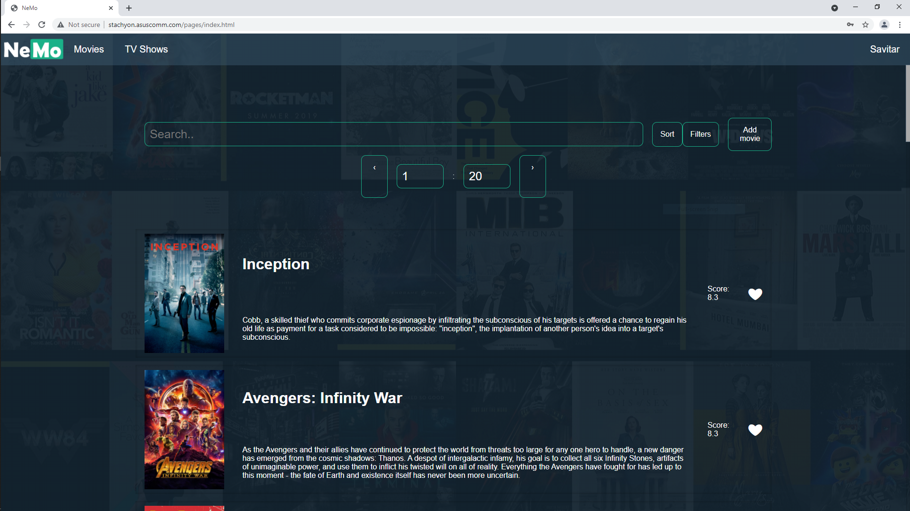
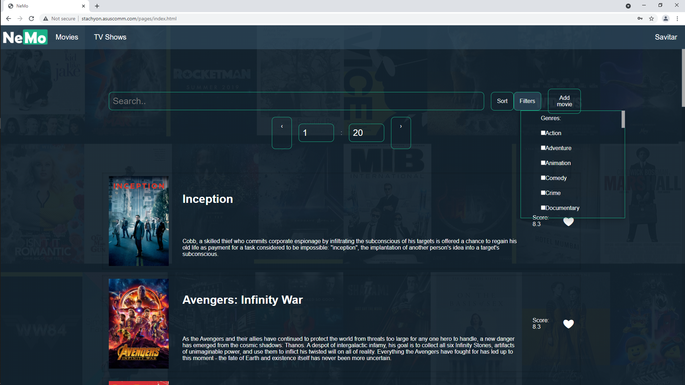

3. External Interface Requirements
3.1 User Interfaces
When it comes to the interaction with the users, we separated our platform on multiple pages based on the content. At this moment, we have one to welcome the visitor, our homepage, the movie page, which will allow the user to learn about the ones we have in our database, filter them based on different criterions and sort them in order to find faster what he’s looking for.
The main page is here to steal the visitor's eyes with the hottest new releases! We have both a movie and a shows slideshow depending on what our user is interested in. This slideshow is updated on the users feedback, the list being based on the highest rated pieces of media.
As we mentioned, we want to give our users a chance to join a completely new community centered on their love for films, and to do this we offered to possibility to create an account or simply sign in if the person already has an account.
These are the main pages from where the users can look for their next binge watch contender or to leave a review to a show they already watched. But this is not all... Click on any show or movie if a short description doesn't tell you enough

We know that we can't saturate the hunger for knowledge with just a few lines of text, a rating and a photo, so we made it that when you click on something you want to see more about, a pop-up with more information will appear on your screen. We value our users' time, so we want to make sure that they make a good decision for themselves.
Of course, not every movie or show that you want will be at the top of the list waiting for you, so we made sure that if you want to search for a movie, even if you don't know its full name, you can do it anytime. But maybe you don't know what movie to watch and just want to find one that is more to your tastes...
Maybe you like a certain genre (or more), maybe you like the movies produces by a certain company or maybe you just want to see what's the highest rated show there is. For all of these needs we offered our users two menus from where they can set filters and see only movies that fulfill those criterions or sort them in a way through which it's easier for them to find what they seek.
3.2 Hardware Interfaces
Going to the hardware level, the browser does most of the heavy lifting for us because we communicate with the browser, then it communicates with the operating system and in the end, it gets to the hardware.
3.3 Software Interfaces
NeMO will be connected to a MySQL database in which we’ll store all that we need to bring to our users the details they want, descriptions, actors, ratings, release dates etc. To fill it, we’ll use the TMDb API to pull the information into our database to have a more responsive experience for those who visit our site.
3.4 Communication Interfaces
We communicate with our users through the HTTP protocol.